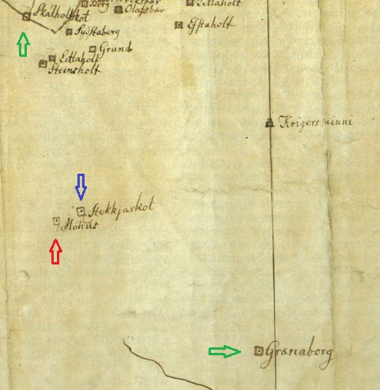

1850
Hluti úr korti Björns Gunnlaugssonar frá 1850. Sýnir bæi í suður Þingholtum og austur úr. Rauða örin bendir á Móhús og sú bláa á Stekkjarkot sem stóð í næsta nágrenni. Grænu örvarnar benda á Skálholtskot og Grænuborg, en troðningur frá Skálholtskoti að Móhúsum og áfram að Grænuborg er núverandi Laufásvegur. Grænaborg stóð þar sem nú er grasflöt fyrir framan gamla Landspítalann.
Krigers minni sem einnig sést á teikningunni er gamla skólavarðan sem stóð efst á Skólavörðuholtinu og holtið er kennt við.

Kort eftir Björn Gunnlaugsson1850